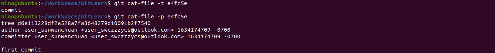

GIT 底层原理
git 仓库的初始化与配置信息
通过 git init 可以创建一个 git 仓库，这应该也是所有学习 git 的程序员接触的第一条 git 命令了。通过在一个文件夹内运行此命令，则会在当前文件夹下生成一个 .git 的文件夹，将当前文件夹初始化为一个 git 仓库，同时该文件夹也是一个 git 仓库的唯一标识，而之后所有对仓库的操作结果都会存储在该文件夹中。如果你要备份或复制一个库，基本上将这一目录拷贝至其他地方就可以了。
git 中有三种配置文件，保存了 git 的配置信息：
- /etc/gitconfig 文件：系统级别的配置文件。若使用
git config时用--system选项，读写的就是这个文件。在系统安装好 git 后，系统中并不会自带该文件，需要使用 git 来进行配置才会生成该文件，示例如下： - ~/.gitconfig 文件：用户级别的配置文件。若使用
git config时用--global选项，读写的就是这个文件。同理，在创建了用户后，用户目录中并不会自带该文件，需要使用 git 来配置才会生成，示例如下：
- .git/config 文件：项目级别的配置文件。在使用
git config时默认就是修改项目级别的配置文件。不同于另外两种配置文件，项目级别的配置文件是在初始化仓库后就会自动生成，但是其中是不会有名称和邮箱信息的，示例如下：
[注]：在使用 git 进行提交的时候，需要从 ./.git/config 文件中读取提交者的姓名和邮箱，而一个新仓库的 ./.git/config 文件中是没有名称和邮箱信息的。所以 git 会向上搜索，即查找用户级别的配置文件 ~/.gitconfig，如果没有找到该文件或者该文件中没有需要的信息，则继续向上搜索，即查找系统级别的配置文件 /etc/gitconfig，如果还是没有找到需要的信息，则 git 会提示用户先输入配置信息，这也是为什么你每次在系统上装好 git 后第一次提交的时候会提示你告诉 git 你是谁！！！如下：
使用 git config --list 命令可以列出所有的配置信息。在其中可能会看到一些重叠的变量，这是因为这个命令会将三种配置文件中所有的变量信息都列出来，但是其是有规律的，也就是从上到下依次是系统级、用户级和项目级，在使用这些变量的时候，会优先使用下面的变量。
git add 一个文件到暂存区发生了什么
在工作区编辑好一个文件，如果我们想将其纳入到 GIT 进行管理的话，首先要先用 git add 命令将其添加到暂存区，那么这个命令会发生什么呢？接下来通过一个示例讲解：
假设我们在上述的空 GIT 项目中添加一个文件，然后将其加入到暂存区：
可以看到在我们将 hello 文件通过 git add 命令将其加入到暂存区后，.git 文件夹中生成了两个新的文件，一个名为 index 的文件，一个文件名看起来像一串随机数的文件。那么，为什么会生成这些文件呢？这些文件的文件名和文件内容有什么特殊的含义吗？
- 先看 objects 文件夹下生成的文件：
这个文件的文件名看起来像一串乱码，而且其上层目录还并不直接就是 objects 目录，而是一个两个字符的目录，这有什么规律呢？开门见山，我们先说结论！！！两个字符的目录名加上后续的长串文件名，代表了一个 hash 值，这个 hash 值是通过 sha-1 算法计算出来的；而在上述用git add添加工作区文件的时候，GIT 会将根据该所添加文件的内容生成一个称为 blob 类型的对象，然后将该文件的内容、对象的类型和该文件内容长度作为 sha-1 算法的输入，生成一个输出，这个输出就是上述 hash 值。而这个生成的 sha-1 文件里面又同时采用压缩算法保存了上述的标红的三个内容信息。
通过 git cat-file 命令则可以查看 sha-1 文件的相关信息：
分别通过 -t、-p、-s 选项，我们则可以看到刚刚生成的 sha-1 文件的代表的对象类型（blob，一种文件对象）、保存的文件内容和内容的大小（Hello GIT 是 9 个字符，但是其末尾还有一个换行符，所以是 10 个字符）。
我们可以使用
cat命令查看该 sha-1 文件中的内容，发现是一串乱码：
这是因为文件的内容已经采用 zlib 进行压缩存储，所以不是直接可读的文本文件了，我们可以采用 zlib 对其解压查看内容：
果然，该 sha-1 文件中保存了对象的类型（blob）、内容的大小（10）和保存的内容（Hello GIT\n）。同样，我们也知道了该 sha-1 文件的文件名是由其保存的内容通过 sha-1 算法生成的，也可以验证如下：
可以看到，用 python3 导入 hashlib 后对上述的内容计算后可以得到 sha-1 文件名对应的 hash 值。验证！！！
- 再看 index 文件：
有没有想过在上述生成的 blob 对象中，并没有保存与文件名相关的信息，而仅仅保存了内容信息，那么 GIT 总是需要文件名信息的吧，不然怎么识别哪个文件已经暂存，哪个没有呢？？OK，我们也先说结论。正如上述所说，还生成了一个 index 文件呀，而文件名信息都保存在了 index 文件中。
通过 git ls-files 命令则可以查看 index 文件中的内容：
可以看到，通过该命令可以知道 index 中保存了 hello 文件名，同时还有其对应的 sha-1 文件的 sha-1 值。
根据以上讨论，如果我们再向暂存区中添加一个 bye 文件，则 GIT 也会为这个 bye 文件生成一个 blob 对象保存内容，同时在 index 文件中加入 bye 文件的文件名信息。
注意，没有添加的暂存区中的文件，是不会被 index 记录的！！
如果我们修改 bye 文件，那么工作区中的 bye 文件则和暂存区中的不一样了，那么 GIT 是怎么知道工作区和暂存区中文件的差异的呢？ 其实他就是将工作区中的文件计算 sha-1 值后与暂存区中的比对，如果不同，则文件被标识为已修改状态，如果 index 文件中都没有这个文件的记录，则文件都没有被加入到暂存区，则文件被标记为未追踪状态。
如果将这个修改后的 bye 文件再次添加到暂存区，根据之前的理解，内容变了，肯定又要新生成一个 sha-1 文件来保存这次更新，那么上次 bye 未提交的 blob 对象会被删除吗？？通过命令查看，发现其并没有被删除，那这应该是一个垃圾 blob 对象文件了。
index 文件也会被更新，其中对 bye 文件中对其 blob 对象记录被更新到刚刚生成的那个。
- 总结： 在执行
git add命令后，GIT 会为文件生成一个 blob 对象（sha-1 文件），这个对象的名字完全由添加文件的内容所决定，通过 sha-1 算法计算出对象的名字，对象中保存的内容包括对象的类型、添加文件的内容和文件内容大小。而添加文件的名称信息则记录在 index 文件中，index 文件的信息可以通过git ls-files -s命令来查看，同时还能看出文件名到暂存区中文件当前的 blob 对象的映射关系。
git commit 背后发生的事
在将文件添加到暂存区后，我们需要用 git commit 命令将其提交到 GIT 仓库进行版本管理，那么运行 git commit 命令会发生什么呢？上述 git add 命令将文件添加到暂存区的时候为每个文件生成了一个 blob 对象，那 commit 也会为每个文件生成 blob 对象吗？或者说还是生成其他类型的对象呢？我们接下来讨论 git commit 背后发生的事！！
为了更好的阐述 git commit 的原理，我们对上述的 GIT 项目修改，在上述两个文件 hello 和 bye 都添加到暂存区的基础上，创建一个目录 process，同时在该目录下创建一个文件 working，并将其添加到暂存区。如下所示：
可以看到，GIT 为 process/working 文件也生成了一个 blob 对象。用 git ls-files -s 查看 index 中记录的暂存区的文件名等信息：
可以发现对于 working 文件，不仅仅记录其文件名，还记录了其相对路径。
接下来我们通过 git commit -m "first commit" 来提交暂存区中的内容，查看生成的文件：
可以看到在 objects 文件夹下生成了三个新的文件，我们先用 git cat-file 查看红色框那个文件：
可以看到，这个文件也代表了一个对象，且这是一个称为 commit 类型的对象；文件内容保存了这次提交的一些信息，包括作者和提交者的基本信息，时间戳，提交的注释等，但最引人注目的还是其第一行有一串 hash 值，因为这个值正好对应了第二个蓝色框的那个 hash 值。我们查看第二个蓝色框文件：

可以看到这个文件也是一个对象，且这是一个称为 tree 类型的对象；文件的内容保存了之前看到的在 index 文件中记录的 hello 和 bye 对象的 hash 值，但是其第三行的信息更让人好奇，这行信息中的 hash 值正好对应了第一个蓝色框的那个 hash 值，而且其名称正好是文件 process ！！！可能聪明的你已经想到这个 tree 对象代表啥了，没错，就是一个文件夹的信息，那么按照我们的理解，这次提交的 working 对象的记录应该就记录在第一个蓝色框那个 tree 对象中了！！我们可以验证如下：
果然没毛病！！！
根据上述分析，我们可以通过图形将上述的层级关系描述如下：
可以看到总共有七个对象，其中有一个被废弃的 blob 对象，记录了一个暂存后被覆盖的信息。commit 对象直接指向代表项目根目录的 tree 对象，tree 对象再指向代表其子目录的 tree 对象和代表文件的 blob 对象。这样一个版本就生成了！！
可以观察到，在 refs/heads 文件夹下也有新的文件生成，也就是 master 文件，我们可以直接查看其内容：
里面恰好保存了代表我们刚刚 commit 对象的 hash 值。同样我们也可以查看 HEAD 这个文件中的内容：
而这个 HEAD 文件中正好保存了刚刚生成的 master 文件名。这其实就是我们所说的 HEAD 指针的概念，它总是指向当前分支的当前 commit 记录！！！这样我们分支的概念也就出来了！！！
假设我们修改 hello 文件和 working 文件，然后将新的更改作为第二次提交 commit 到 GIT 仓库，如下：
观察 .git/objects 文件夹下生成的文件：
一共生成了五个对象，一个 commit 对象（红色）、两个 tree 对象（蓝色）、两个 blob 对象（绿色）。这样就形成了一次新的提交记录，查看 refs/heads/master 中内容：
果然保存了刚刚第二次提交的 commit 对象的 hash 值。这样我们的对象关系如下：
可以看到我们第二次提交由于没有改变 bye 文件所以其依旧指向上一个版本 bye 的 blob 对象，而修改了的文件会生成新的 blob 对象，而不是仅仅保存了文件的差异，而是修改后的整个文件。
接下来我们再次修改 bye 文件，并提交记录：
你可以思考一下这次提交会生成几个对象，分别是什么？？可以查看下图寻找答案！
这次提交仅仅生成了三个对象，分别是一个 blob 对象（记录了更改后的 bye 文件内容）、一个 tree 对象（由于 bye 文件发生了改变，所以其所在目录要重新生成一个 tree 对象）和一个 commit 对象（代表第三次提交）。
GIT 分支管理好像很简单
通过上述的学习，基本上对于 GIT 底层的处理已经很清晰明了了，很多问题即使上述内容中没有讲到，但也应该可以很容易的想到答案。此处再讨论几个小问题：
1、怎么理解 GIT 分支管理和 HEAD 指针？
通过上述的讨论，可以知道所谓分支不过是一个指向 commit 对象的指针，这个指针就保存在 .git/refs/heads 文件夹中，每一个分支都是一个文件，其中文件名就是分支名，而文件内容就是该分支当前指向的 commit。而 HEAD 指针则指向当前工作的分支，其内容可以在 .git/HEAD 文件中看到，当 HEAD 指向某个分支时，这个文件就记录该分支的文件路径，也就是上述 .git/refs/heads 文件夹中的一个文件。所谓切换分支，也就是修改 HEAD 文件使其记录相关分支的路径名。
2、使用 git branch -D 强行删除一个未合并的分支，会删掉其提交记录中对应的各种对象吗?
根据第一点，我们可以知道分支不过相当于一个指针罢了，而在删除分支时，只会删除代表该分支的指针，而不会删除其指向的值，所以提交记录中的各种对象是不会被删除的。通过某些操作，我们甚至可以直接恢复该分支和删除之前已经提交的内容。
3、对于 fast forwad 合并，可以知道当前分支在合并前指向哪条 commit 吗？
在 fast forward 合并的时候，GIT 并不会对此次合并生成一个提交记录，而是直接将当前分支的指针移动到目标分支指针指向的提交记录。那经过这次操作，我们好像并不知道在合并之前当前分支指向哪条提交记录，但其实对于 fast forward 合并操作，GIT 会在 .git 目录下生成一个 ORIG_HEAD 的文件，该文件中就记录了在合并前当前分支指针所指向的提交记录的 commit 对象 hash 值。
当然了，对于三路合并，虽然会生成一次提交记录，且在新的提交记录中会有两个 parent 的记录来保存合并前当前分支所指向的提交记录和目标分支所指向的提交记录，但其同样也会更新 ORIG_HEAD 文件。